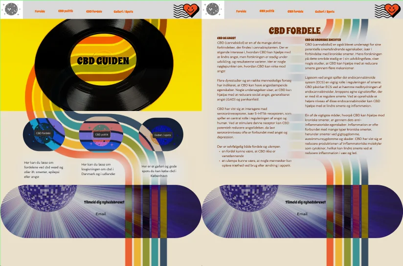
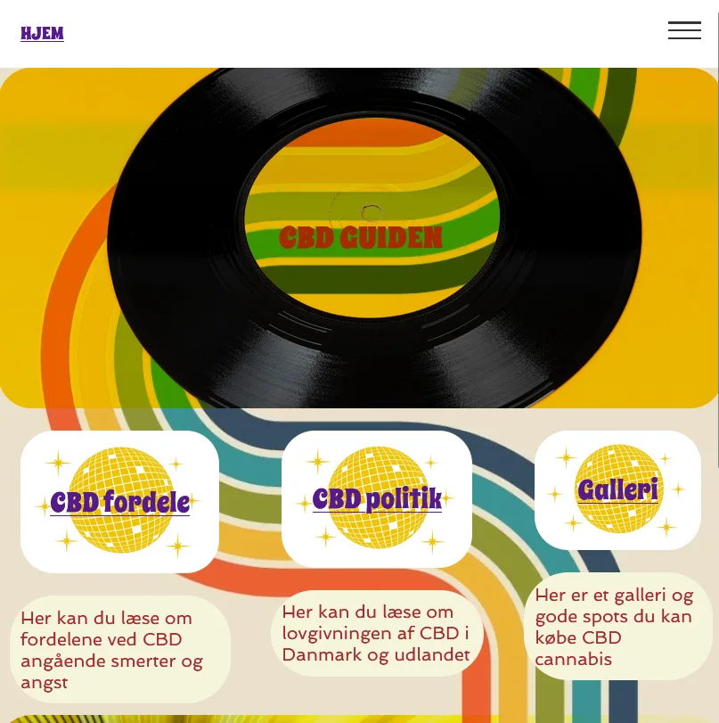

Dette tema gav mig en grundlæggende forståelse for samspillet mellem
brugere og brugergrænseflader. Jeg lærte også meget om metoder, som jeg
kunne bruge til research, design og tests til udviklingen af hjemmesider
over tid.

UX/UI KONVENTIONER
Jeg lærte meget om UX og UI konventioner, såsom mobilvenligt design
(responsiv design), som betyder, at designet skal tilpasse sig
forskellige skærmstørrelser (mobil, tablet, desktop). At man skal
bruge store knapper og letlæselige skrifttyper på små skærme. Der er
også intuitiv navigation, som at menuer og navigationslinjer skal
være nemme at finde og forstå.
TESTS
I dette projekt skulle vi lave et emnesite. Jeg valgte emnet CBD,
som er weed uden det psykoaktive stof THC. Jeg lavede en test af den
første prototype, som viste sig at være for kedelig, derfor ændrede
jeg designet ud fra svarene på testen, og prototypen blev derefter
meget bedre. Den endelige prototype kan ses på første billede. Jeg
havde en del udfordringer i tema 03, da jeg skiftede målgruppe midt
i det hele, da jeg følte det ikke stemte overens med det site jeg
ville lave. Jeg havde set mange sites, der henvendte sig til
medicinske brugere af CBD og jeg ville bare gerne lave et site til
mine venner og nybegyndere og livsnydere der benyttede sig af CBD.

TESTS
Jeg lavede også en heuristisk test af sitet, og fandt ud af at
knapperne ikke var runde ligesom i prototypen, og at der ikke var
nogen burgermenu, så det fiksede jeg lige på en time. Jeg tog meget
inspiration til sitet fra mine venner der har en CBD butik, og ville
gerne have noget vi kunne mødes over og snakke om når vi mødtes, samt
vise noget til nybegyndere, som tænkte det mere som en livsnyder ting
end medicinsk behandling. Dog kan det bruges til alt. Nedenunder har
jeg indsat min figma.